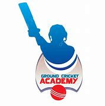
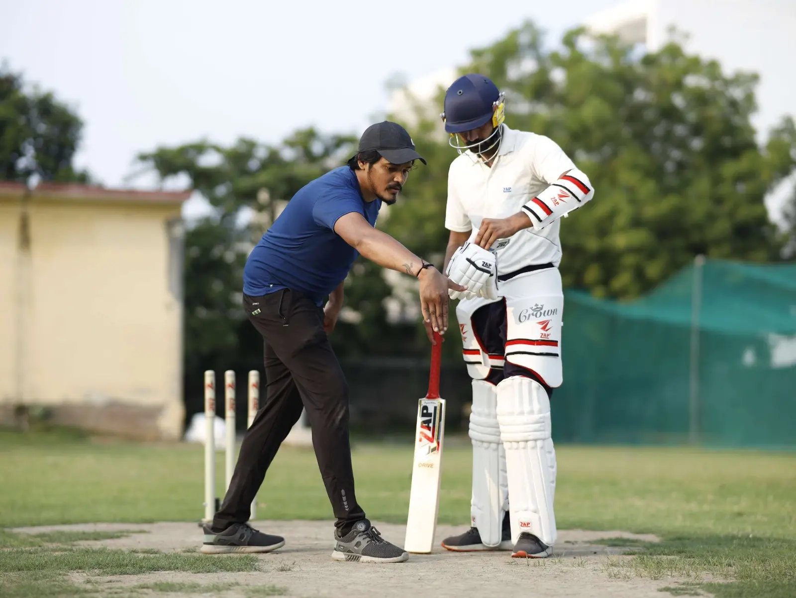
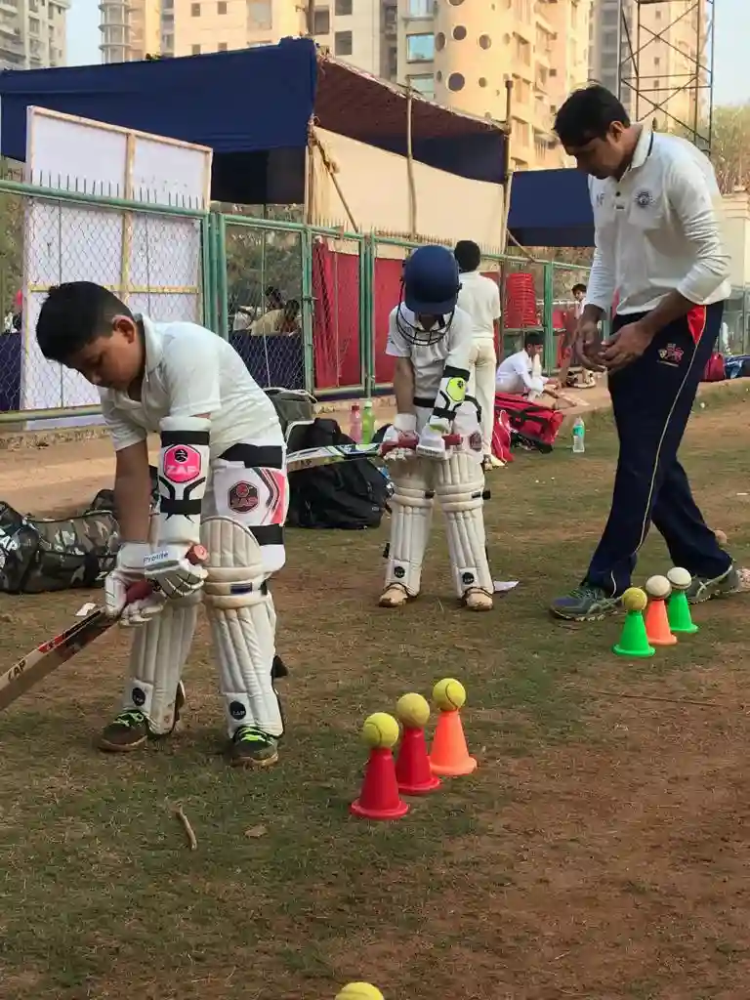

GOWTHAM CRICKET ACADEMY
|CRICKETüèè|
|Next Cricketing SuperStar|

|OUR GOALS|
cricket academy's goals typically encompass both the development of individual skills
the fostering of well-rounded individualsThis includes technical coaching in batting, bowling, and fielding, as well as tactical guidance and the development of mental resilience and sportsmanship. Academies also focus on physical fitness, identifying and nurturing talent, and creating a positive and inclusive learning environment.
|OUR COACHES|
,
THE PLUS POINTS:
Coaching with expertise:

TALENT IDENTIFICATION

| register for academy| |you tube| |instgram|